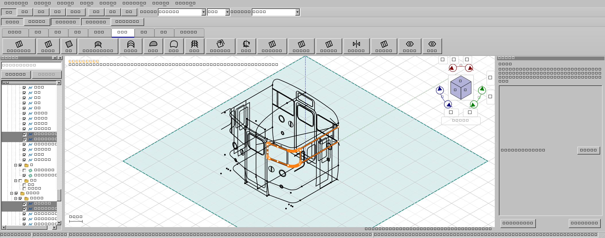
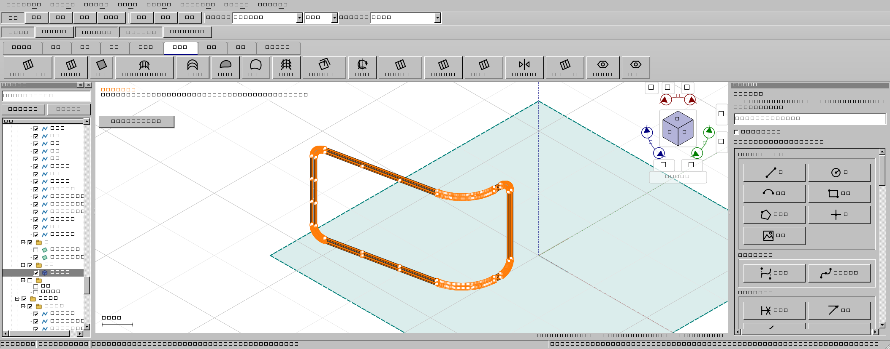
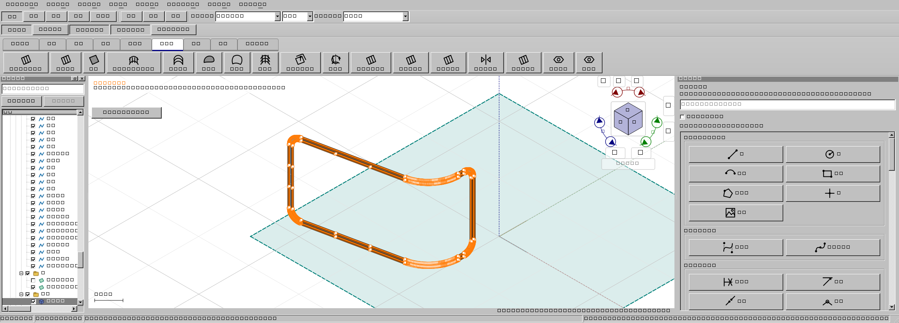

2026-11-02。利用者の115投影のコピーを使い、選択した輪郭から窓内が空いた帯を作り、厚み付き部品にする操作を確認しています。元ファイルは上書きしていません。
配布状態：修正版のWindows全体検証に成功。CTest195件、開発版UI651件、配布版UI651件、旧CAD自己試験、通常起動検査がすべて成功しました。ソースは762e710d08cd89ce6634b2f1ef6ea9fb2ecbf76e。実行証拠はout/verification/hrubber-full3-20261102/result.jsonです。
以前の試験では、正面と側面へ投影された2本を「外周と内周」と誤って扱っていました。この2本は同じ窓輪郭の続きです。Hゴムの帯には、外周の正面・側面と、内周の正面・側面の計4本が必要です。窓全面を埋める面の試験と、Hゴムの帯の試験を区別しました。


前面・側面に共通する投影区間を既存の文書許容差内で整理し、つながった輪ごとに穴の内外を判定します。離れた端点を勝手に移動したり、文書の許容差を引き上げたりはしません。元の線・曲線形式・UUID・参照・グループ設定を保持します。
閉じていない内側の輪郭を無視して窓を埋める候補は、確定できない案内にします。長い分割線が外部から面の内側を横断する場合は、単なる余り線として捨てず区画分割へ使います。内周について確認済みの外側の余りは、外周で誤って再判定しません。
厚み計算用の子プロセスでは、OCCT形状キャッシュをプロセスの実行環境が有効な間に解放するよう変更しました。終了時の不正メモリアクセス対策であり、報告されたすべてのクラッシュが同じ原因だったと断定するものではありません。
全体検証の最初の事前検査では関数長の制限を超えたため、判定と表示計画を分離しました。次の配布版全651件では、既存の未閉窓試験が1件失敗し、同じ版を使う重複試験を中断しました。失敗の証拠は残しています。最終候補の実際の隣接端点だけを検査して従来の明示的な修正経路へ戻す修正後、既存の失敗例・面作成の既定例・実Hゴムを含む重点25件が成功しました。未閉窓の位置と距離を新たに正確表示できたと保証する試験ではありません。修正後に全体ゲートをやり直し、成功を確認しました。
| 対象 | 実施と結果 |
|---|---|
| 面作成の既定操作 | 18件成功。T字、部分辺、共有辺、取消、再編集、外部からの横断線、未閉窓の拒否と不足辺追加後の復帰を含みます。 |
| 元の4投影ワイヤ | 左一覧のCtrlクリック → 1穴の帯 → 0.1 mm厚み → Undo/Redo → KCD2保存・再読込を通過。 |
| 同じ32区間を1本の複合ワイヤにした場合 | 同じ1穴の帯と部品を作成。元の全要素のUUID・曲線・参照・表示設定の保全を照合。 |
| 材料と空洞 | 窓内への検査線は材料に当たらず、上下と側面の帯には当たることを面・部品・再読込後で検査。 |

主担当が実装・ビルド・試験を管理し、読み取り専用の幾何調査担当とUI・回帰レビュー担当を使用しました。補助担当はファイル編集、Git変更、ビルド、試験、アプリ操作を行っていません。レビューで見つかった未閉窓の再受理と共有辺の回帰を、主担当が実試験で確認・修正しました。
これらは実行ファイル内のQt操作試験です。左一覧には実マウスイベントを送っていますが、OS全体を外部マウスで操作した試験ではありません。任意の3D輪郭だけでは曲率が一意に決まらない場合があり、すべての曲面を線だけから推測できるという保証ではありません。
AGENTS.mdと検証手順は主担当＋必要時の読み取り専用2担当を定めています。以前の方式との比較は開発待ち時間の比較資料にあります。今回は幾何の調査担当とUI・回帰レビュー担当を実際に使用しました。記録された方針と、個々の作業で実際に使った担当数は区別します。